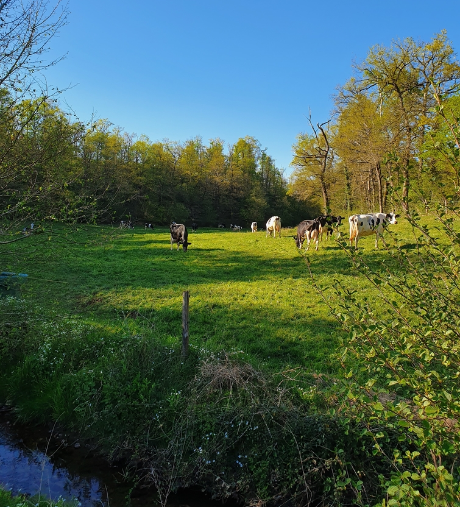
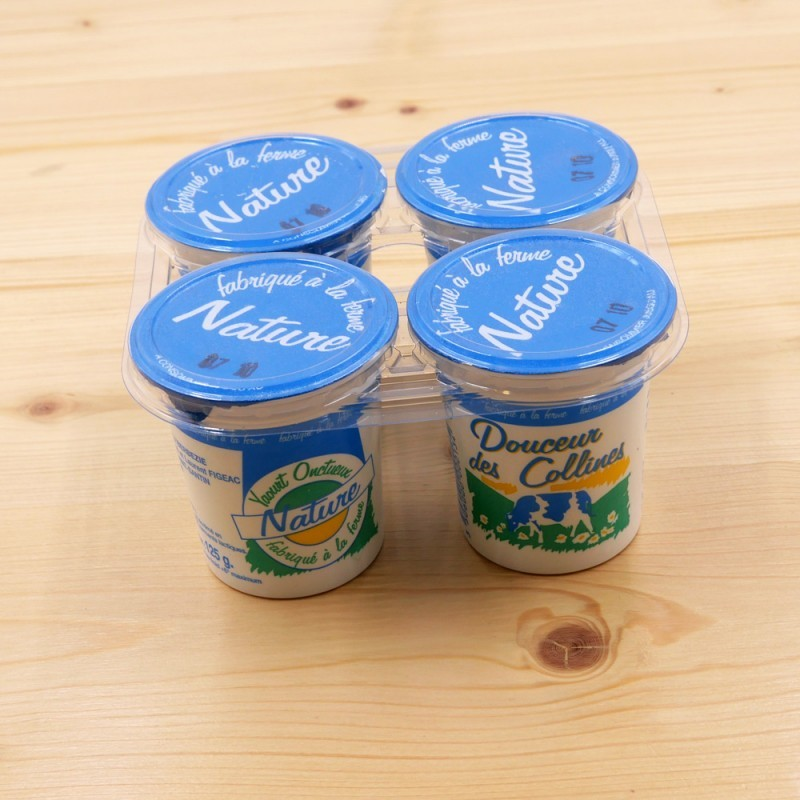
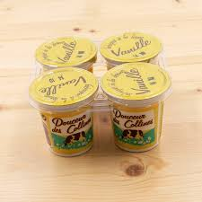
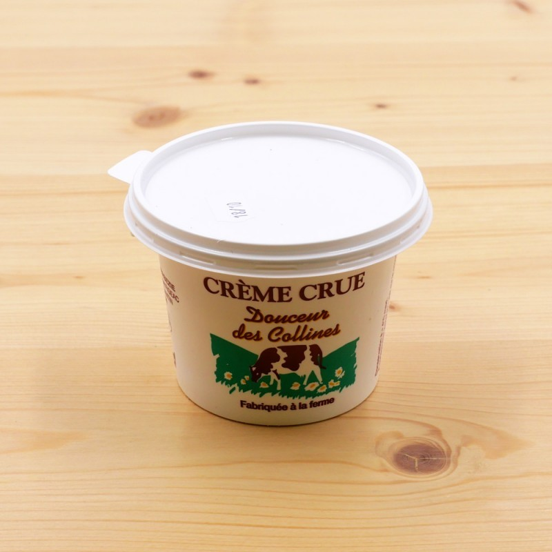

Du lait à la cuillère, en Aveyron
Yaourts fermiers nature et vanille, crème crue thermoscellée. Lait de la traite du matin, transformé le jour même, sans conservateur.
Une ferme familiale, quatre générations sur les mêmes prés
Au même endroit, sur le plateau de Saint-Santin. Transformation laitière depuis 1994 avec Marie-José et Laurent Figeac.
Nées et élevées sur place, nourries sur une cinquantaine d'hectares. Pâturage extérieur du printemps à l'automne.
Dans notre atelier agréé CEE, à quelques mètres de l'étable. Lait tiré le matin, en pot l'après-midi.
Trois pots. Le vrai goût du lait
Lait entier de notre troupeau, ferments lactiques, et c'est tout · Conservation longue, sans conservateur · La fraîcheur du lait fait la qualité du produit

Nature

Vanille

Non pasteurisée
Toujours
à portée de cuillère
Hypermarchés, épiceries fines, fromagers, marchés, ambulants. La carte interactive est mise à jour chaque saison.
Vous êtes épicier, restaurateur,
collectivité ?
Travaillez avec un producteur local. En rayon, en cuisine, au menu des cantines. Produit tracé, conservation longue, référencés Agrilocal pour les collectivités · Nous revenons vers vous sous quelques jours.